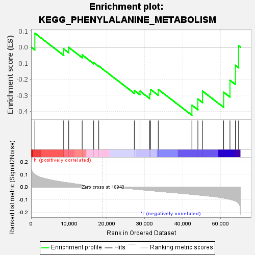

| | | Dataset | VCAN.VCAN.cls#h_versus_l.VCAN.cls#h_versus_l_repos |
| Phenotype | VCAN.cls#h_versus_l_repos |
| Upregulated in class | l |
| GeneSet | KEGG_PHENYLALANINE_METABOLISM |
| Enrichment Score (ES) | -0.42379242 |
| Normalized Enrichment Score (NES) | -1.1130701 |
| Nominal p-value | 0.3263158 |
| FDR q-value | 1.0 |
| FWER p-Value | 0.995 |
Table: GSEA Results Summary

Fig 1: Enrichment plot: KEGG_PHENYLALANINE_METABOLISM
Profile of the Running ES Score & Positions of GeneSet Members on the Rank Ordered List
| SYMBOL | TITLE | RANK IN GENE LIST | RANK METRIC SCORE | RUNNING ES | CORE ENRICHMENT | | 1 | AOC2 | na | 986 | 0.098 | 0.0865 | No |
| 2 | NAA80 | na | 8602 | 0.037 | -0.0115 | No |
| 3 | ALDH1A3 | na | 9931 | 0.031 | -0.0022 | No |
| 4 | GOT2 | na | 13481 | 0.017 | -0.0484 | No |
| 5 | IL4I1 | na | 16524 | 0.007 | -0.0965 | No |
| 6 | DDC | na | 17862 | 0.003 | -0.1178 | No |
| 7 | ALDH3B2 | na | 27241 | -0.017 | -0.2693 | No |
| 8 | MIF | na | 28748 | -0.021 | -0.2739 | No |
| 9 | MAOB | na | 31318 | -0.028 | -0.2902 | No |
| 10 | AOC3 | na | 31547 | -0.029 | -0.2634 | No |
| 11 | PAH | na | 33565 | -0.035 | -0.2630 | No |
| 12 | TAT | na | 42449 | -0.058 | -0.3616 | Yes |
| 13 | PRDX6 | na | 44031 | -0.063 | -0.3228 | Yes |
| 14 | HPD | na | 45258 | -0.067 | -0.2736 | Yes |
| 15 | GOT1 | na | 50837 | -0.088 | -0.2808 | Yes |
| 16 | MAOA | na | 52500 | -0.098 | -0.2066 | Yes |
| 17 | ALDH3A1 | na | 53933 | -0.111 | -0.1134 | Yes |
| 18 | ALDH3B1 | na | 54773 | -0.129 | 0.0089 | Yes |
Table: GSEA details [plain text format]
Fig 2: KEGG_PHENYLALANINE_METABOLISM
Blue-Pink O' Gram in the Space of the Analyzed GeneSet
Fig 3: KEGG_PHENYLALANINE_METABOLISM: Random ES distribution
Gene set null distribution of ES for KEGG_PHENYLALANINE_METABOLISM